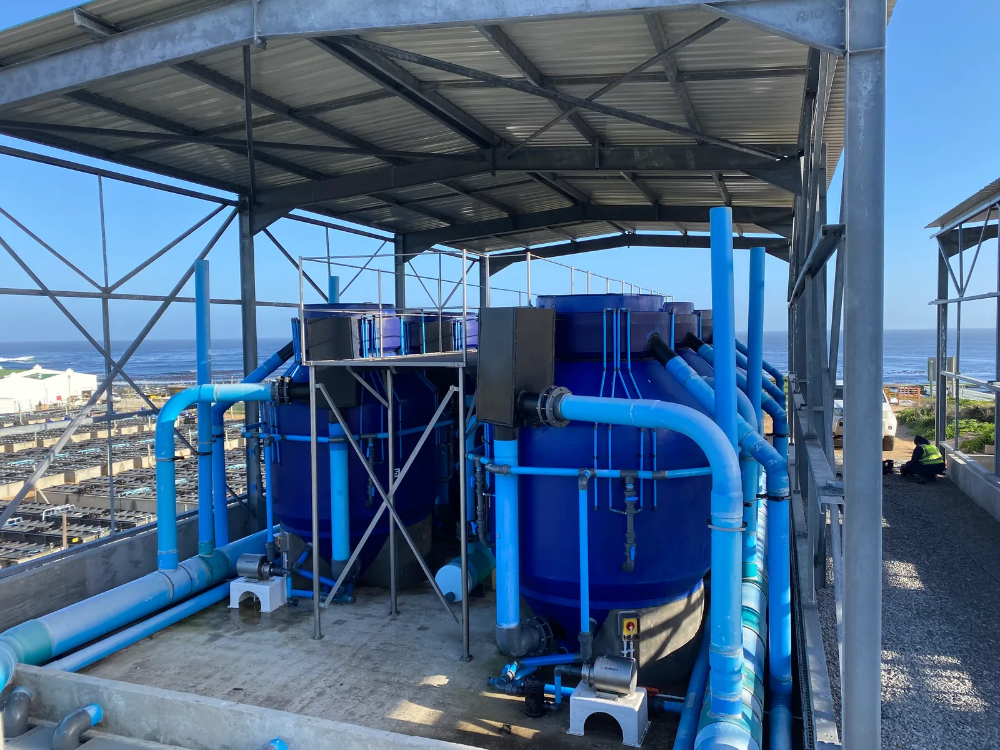

COASTAL WATER FILTRATION
High-Capacity Coastal Seawater Filtration Plant
Engineered to protect land-based marine aquaculture operations against harmful algal blooms (red tides) and extreme turbidity while ensuring uninterrupted supply of pristine seawater.
Flow Rate: 1,200,000 L/h (1.2 ML/h)
Application: Coastal Red Tide Mitigation & Filtration
Location: West Coast, Western Cape, SA
Key Tech: High-rate multi-vessel sand filtration, automated backwash cycle, high-volume degassing towers, coastal pumping station